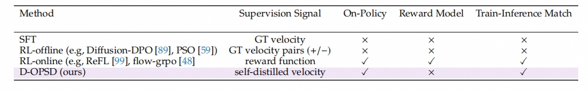
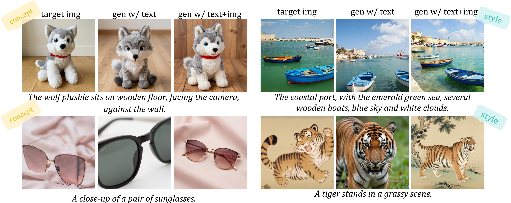
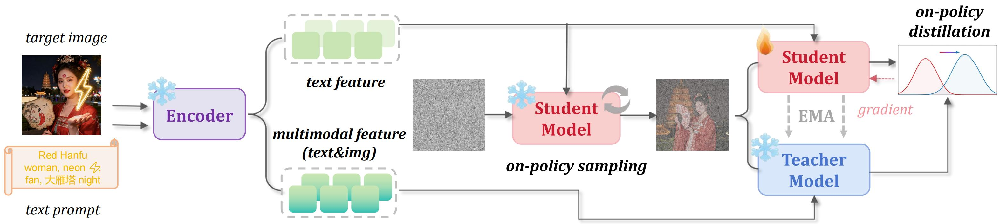
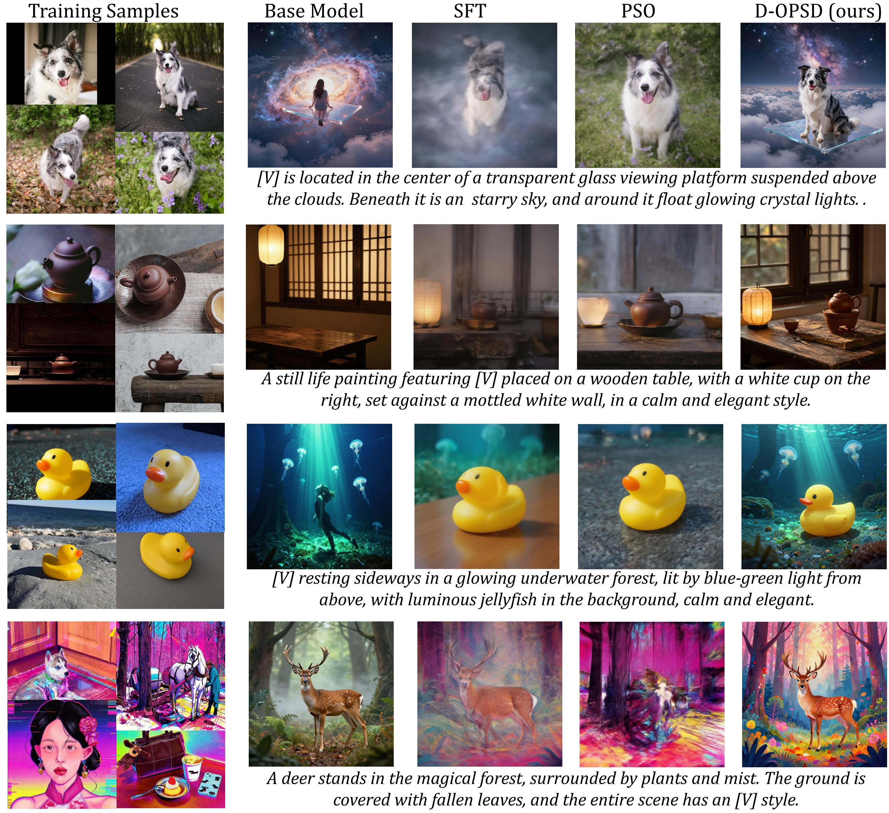
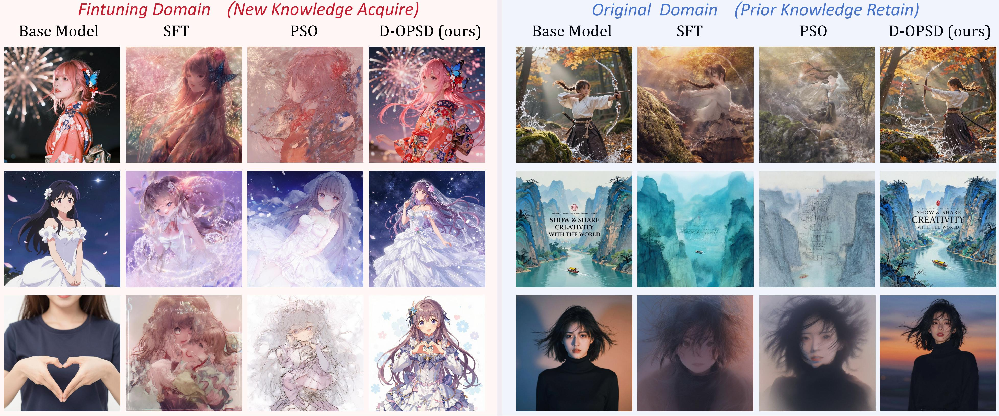

High-performance image generation models are shifting from inefficient multi-step samplers to efficient few-step counterparts. These step-distilled diffusion models are attractive in practical production settings because they reduce the number of function evaluations while preserving, and often improving, generation quality.
However, how to continually tune such models remains unclear.

Vanilla SFT provides supervision through ground-truth velocity, but it is off-policy and lacks train-inference state consistency. Offline RL-style methods such as Diffusion-DPO or PSO introduce pairwise supervision, yet their optimization states and supervision signals are still not fully induced by the student's current distribution. Online RL-style methods better preserve few-step behavior by training on model roll-outs, but they depend on reward functions or reward models that are often unavailable for secondary developers who only have image-text pairs.
D-OPSD occupies a different point in this design space: it is on-policy, does not require a reward model, preserves train-inference consistency, and still incorporates target image-text pairs through self-distillation.

Modern diffusion models with LLM/VLM encoders can inherit in-context capabilities from the encoder.
The key question is: how can target-image information be introduced while keeping the student's few-step roll-out unchanged? We find that when replacing text-only features with multimodal features extracted from both the text prompt and the target image, the diffusion model can already generate variations that preserve the target concept or style, even without additional training.
This emergent behavior enables on-policy self-distillation in diffusion models. The target image is used as in-context supervision for a stronger teacher condition, rather than as a direct denoising target that would alter the trajectory itself.

For each training pair, D-OPSD first passes the prompt alone and the prompt together with the target image through the encoder to obtain a text feature and a multimodal feature. The student branch is conditioned only on the text feature and samples a few-step trajectory on-policy. The teacher branch is conditioned on the stronger multimodal feature of the text prompt and target image.
Teacher and student then predict velocities on the same trajectory states, and training minimizes their difference over the student's own roll-outs. After training, the teacher branch is discarded, and inference uses exactly the same few-step text-to-image pipeline as the original step-distilled model.

In small customized LoRA training, D-OPSD learns new concepts from only a few image-text pairs while maintaining few-step generation quality and generalizing to unseen prompts.

In full fine-tuning, D-OPSD adapts the model toward the target domain (anime) while retaining original-domain knowledge and few-step inference capability.
Across LoRA customization and full fine-tuning, experiments show that D-OPSD enables the model to learn new concepts, styles, and domain preferences from target image-text pairs without sacrificing its original few-step capacity. Compared with SFT and PSO-style baselines, D-OPSD better balances target distribution adaptation, visual quality, prompt following, and prior knowledge retention.
In this work, we introduce on-policy self-distillation to image generation and show that it is a promising paradigm for continuously training step-distilled diffusion models. Building on this framework, several directions merit further study.
More broadly, we hope our study provides useful insights for future research on post-training and continuous adaptation in diffusion-based generation.
@article{jiang2026dopsd,
title={D-OPSD: On-Policy Self-Distillation for Continuously Tuning Step-Distilled Diffusion Models},
author={Jiang, Dengyang and Jin, Xin and Liu, Dongyang and Wang, Zanyi and Zheng, Mingzhe and Du, Ruoyi and Yang, Xiangpeng and Wu, Qilong and Li, Zhen and Gao, Peng and Yang, Harry and Hoi, Steven},
journal={arXiv preprint arXiv:},
year={2026}